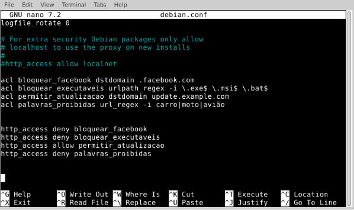
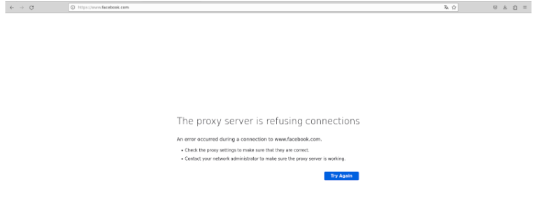
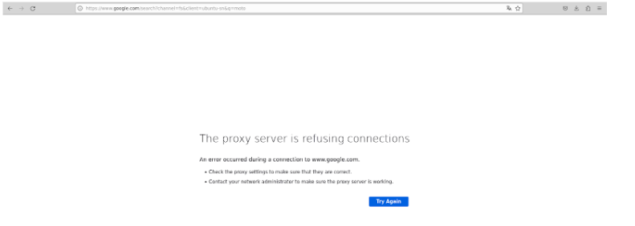

PROXY
O Squid é um servidor proxy amplamente utilizado em ambientes Linux para fornecer serviços de proxy HTTP e cache.
Comumente usado em redes corporativas, escolas e provedores de serviços de internet para melhorar o desempenho, implementar políticas de acesso e proteger a privacidade dos usuários.
O Squid é uma solução robusta para gerenciar o tráfego web, melhorar a eficiência e implementar políticas de segurança em ambientes Linux.
Instalação do Proxy em um Ambiente Linux.
Abra o terminal:
Vá até o menu e procure por "Terminal" ou pressione Ctrl + Alt + T para abrir o terminal. Atualize a lista de pacotes:
Antes de instalar qualquer coisa, é uma boa prática atualizar a lista de pacotes disponíveis. Digite o seguinte comando e pressione Enter:
sudo apt update
Momento onde você vai começar a instalação:
Agora, você está pronto para instalar o Squid. Digite o seguinte comando e pressione Enter:
sudo apt-get install squid
Confirme a instalação:
O terminal pode perguntar se você deseja continuar. Digite Y (sim) e pressione Enter. Aguarde a conclusão da instalação:
O sistema começará a baixar e instalar o Squid. Aguarde até que o processo seja concluído. Verifique a instalação (opcional):
Após a instalação, você pode verificar a versão do Squid para garantir que tudo correu bem. Digite o seguinte comando:
squid -v
Isso deverá exibir a versão do Squid instalada. Inicie o Squid (se não iniciar automaticamente):
Dependendo da configuração do seu sistema, o Squid pode iniciar automaticamente após a instalação. Se não, você pode iniciar manualmente com o seguinte comando:
sudo service squid start
Configuração
Abra o arquivo de configuração do Squid:
Normalmente, o arquivo de configuração do Squid está localizado em:
/etc/squid/squid.conf
Você pode editá-lo usando um editor de texto, como o nano. Digite o seguinte comando para abrir o arquivo:
sudo nano /etc/squid/squid.conf
Adicione as ACLs:
No arquivo de configuração, você pode adicionar as ACLs no final ou em uma seção específica, dependendo de como o arquivo está organizado. Adicione as seguintes linhas para criar 4 ACLs simples:
# ACL para bloquear o facebook
acl bloquear_facebook dstdomain .facebook.com
# ACL para bloquear executaveis
acl bloquear_executaveis urlpath_reges -i \.exe$ \.msi$ \.bat$
# ACL para permitir atualização
acl permitir_atualização dstdomain update.example.com
# ACL para proibir palavras
acl palavras_proibidas url_regex -i carro moto aviao
Lembre-se de ajustar os valores dessas ACLs conforme necessário para atender aos seus requisitos.
Configure as regras de acesso:
Depois de criar as ACLs, você pode configurar as regras de acesso. Adicione as seguintes linhas para permitir ou negar o acesso com base nas ACLs criadas:
Regra para bloquear o facebook
http_access deny bloquear_facebook
Regra para bloquear executaveis
http_access deny bloquear_executaveis
Regra para permitir permitir atualização
http_access allow permitir_atualizacao
Regra para proibir palavras
http_access deny palavras_proibidas
Regra padrão (ao final do arquivo) para negar acesso não permitido
http_access deny all
Essas regras são apenas exemplos. Você pode personalizá-las de acordo com suas necessidades específicas.
Salve e saia:
No editor de texto (nano), pressione Ctrl + X para sair, confirme se deseja salvar as alterações, pressionando Y, e pressione Enter. Reinicie o Squid:
Após fazer as alterações no arquivo de configuração, reinicie o Squid para aplicar as mudanças. Utilize o seguinte comando:
sudo service squid restart
Teste
Após fazer todos os passos anterior, vamos ver como ficou os testes:
-
Foi criado uma cópia do arquivo: /etc/squid/squid.conf. Para ser editado sem perder os dados do arquivo principal.
-
Foi adicionado todas as acls e as regras.
Imagem do arquivo de configuração

Nas imagens seguintes, vimos o Navegador configurado e recusando acessos que foi inseridos no arquivo de configuração.
1 - Recusado acesso ao: facebook.com
1.1 - Recusado pesquisa com a palavra: moto
Imagem 1

Imagem 1.1
